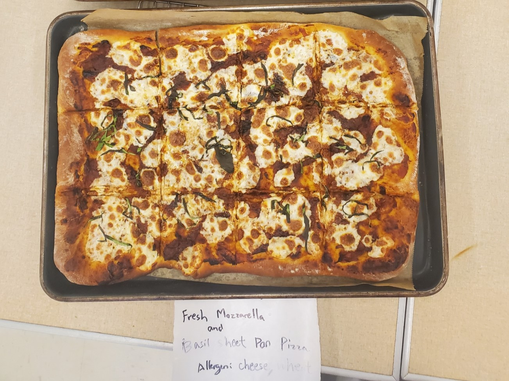

Roasted Tomato, Fresh Mozzarella and Basil Sheet Pan Pizza

Ingredients
- 2 plum tomatoes, halved length wise, cores and seeds removed
- 4 tablespoons good olive oil
- 1 ½ teaspoons balsamic vinegar
- 2 large garlic cloves, minced
- 2 teaspoons sugar
- 1 ½ teaspoons kosher salt
- ½ teaspoon freshly ground pepper
- 1 lb Fresh mozzarella, torn into bite size pieces
- 1 bunch Basil, chiffonaded
Directions
- Preheat the oven to 450 degrees F.
- Arrange the tomatoes on a sheet pan, cut side up, in a single layer. Drizzle with olive oil
and balsamic vinegar. Sprinkle the garlic, sugar, salt and pepper over the tomatoes. Roast
for 25 to 30 minutes, until the tomatoes are concentrated and begin to caramelize.
- Roll pizza dough into two large rectangle and place on two greased ¼ sheet pans.
- Break up the roasted tomatoes to make a chunky sauce and spread over the top of each
dough.
- Sprinkle evenly with the fresh mozzarella.
- Bake, rotating baking pans as needed, until the bottom crust is light brown.
- Remove from the oven and wearing gloves, generously sprinkle with chiffonade of basil.
- Let cool slightly and slice into rectangles for serving.